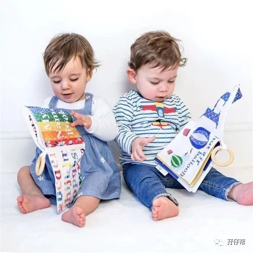
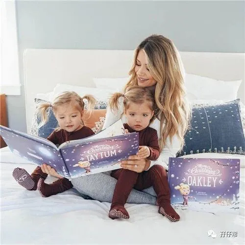
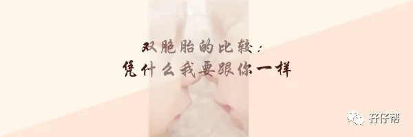

文|圆圈妈，一个文思如尿崩的双胎妈妈
图|来自网络，如有侵权，请联系删除
· 正 · 文 · 来 · 啦 ·
关于双胞胎亲子阅读攻略，孖仔帮公号有推送过3篇文章，根据双胞胎孩子的不同年龄阶段，采取针对性的亲子阅读方式。
《嘿！双胞胎孩子的亲子阅读攻略，要来一份吗（0--1岁阶段）》
《嘿！双胞胎孩子的亲子阅读攻略，要来一份吗（1--2岁阶段）》
《嘿！双胞胎孩子的亲子阅读攻略，要来一份吗（2--3岁阶段）》
今天继续说说家有3—4岁年龄阶段的双胞胎，该如何开展亲子阅读。
【01】
我的双胞胎亲子阅读经历（3—4岁）
得益于前期亲子阅读的积累，入园后的圆圈兄弟依然保持着睡前阅读的习惯，而且雷打不动！
有时过了睡觉点，我说睡前读书就免了吧，立马遭到他们的强烈抗议，非要读一段，哪怕翻几页书，过下场子才肯睡。
与他们而言，睡前阅读除了是个习惯，更多的是一种睡前仪式，马虎不得！
关灯后，哥俩还要窃窃私语一阵子，貌似在开一个读书研讨会，约莫十分钟左右，基本上就安静下来了！
作为鄙视链条的最底层（家有两儿子）家庭，这…恐怕是唯一一件让我感到欣慰的事情了！
【02】
双胞胎亲子阅读3—4岁阶段的阅读特点
在阅读方面，3—4岁的孩子，意味着什么呢？
意味着，超过30秒钟的描述，你将会被打断，因为此时的他们正处于语言爆发期前的准备期，只喜欢简短直白的对话！
意味着，他们进入了幼儿园，知道了集体学习机制，开始有各自的喜好，对某一类书产生浓厚的兴趣，如恐龙书、汽车书、仙女书等
意味着，他们的好奇心愈加突出，一个问题必须问好几遍，直至找到满意答案为止。
在这样的大环境下，即便有前期的阅读基础积累，我的亲子阅读依然遇到了不少困难，
① 依然彼此影响
虽然他们在阅读期间，不会再像小月龄那会撕书，抢书，但由于各自喜好的书籍不一样，经常会为了先让我读哪本书而发生争执。
当两人拿着两本不一样的书，同时要我读时，我会说：“妈妈只有一个，你们自己先商量好！”
于是，他们互不相让，试图说服对方：「圆圆，让我先」「圈圈，让我先」
还好，哥俩学会了察言观色，看到我对他们的争执冷眼旁观，知道这样争下去并没有好处.
于是两人很快就自发形成一套休战协议：这次你先，下次我先！
② 有特别偏爱的书
也许是入园后，接触多了，眼界高了。
哥俩经常对我选的书嗤之以鼻，每次带他们去少儿阅览室，都要自己选书看。
一张借书证一次只能借10本书，我每次都很为难，太多书我很想给他们读，而他们有太多书也想自己看。
我想给他们看健康饮食方面的绘本如《慢慢吃，不着急》，希望借助绘本教他们餐桌礼仪，但是他们只喜欢看动物和自然科普类的绘本，如《恐龙百科知识》
我让他们看食物，他们眼睛却盯着封面上那只凶残的旗鱼。
当我问他们：“食物进入喉咙，接着会跑到哪去？”
他们的会反过来问我：“妈妈，那只鱼把你吃进去，会拉出一个“妈妈臭臭”吗？”
OK！完全当我是空气！
③ 找茬专业户，诸多要求
记忆力超强！有时候不是件好事！
举个例子，一本新绘本，我给他们读了两三遍，他们能学着我的语气念出来，而且入木三分。
当我隔天再次读绘本时，不小心说错一个字，他们就会严肃地打断我，并义正言辞地批评我：“妈妈，你刚才读错了，是XX，不是XX！”
把我训一通之后，觉得还不够过瘾，还要我按照他们刚才的语气和方式再读一遍，稍有偏差都不行。
有时，我给他们读绘本时总是心不在焉，对他们提的问题很敷衍地回答，他们还会同仇敌忾地抗议。
“妈妈，你继续读啊！不要停下来！”
“妈妈，不要讲那么快！”
【03】
双胞胎亲子阅读3—4岁阶段的阅读建议
根据3---4岁孩子成长特点的普遍性，再结合双胞胎孩子的特殊性，我的建议如下：
① 适时分开，鼓励自主阅读
当两孩子表现出差异化的阅读兴趣和有强烈的表现欲望时，请把两孩子分开进行亲子阅读，并鼓励他们自主阅读。
只要是科学健康的内容，都可以让他们自由发挥，随意翻阅。
你可能会觉得他们只是随便翻翻，没啥意思。
其实什么叫阅读？
孩子对阅读的看法和成人对阅读的看法，完全不在一个频道，我们拿成人的标准去定义孩子的规范阅读，是不是欠妥了点？
而我鼓励你让他们自主阅读，完全是替你着想，毕竟，你不可能同时给两个人读不一样的书。
最好的办法是，教会他们自主阅读，而你也就可以脱身而出！
作为家长的你，可以坐在边上看自己的书，也可以选择离开，不管你去干嘛，都不要打扰他们！
倘若两孩子经常吵着你陪读， 那你也别拒绝！
这是好事！
等他们真正会自主阅读，不再需要你陪读时，你反而会很失落哦！
② 来点乐子，增加阅读的趣味性
双胞胎的好处之一，有伴儿。
有伴儿意味着，很多玩伴间的小游戏随时随地可以进行，比如角色扮演，过家家，竞技比赛，你问我答…
以上均可以充分利用到亲子阅读上来！
比如拿一本《全脑开发思维游戏》的书本展开抢答模式，通常是你来问，让孩子们举手抢答，答对了，就大肆地表扬他们。
注意，是“大肆地表扬”，目的是烘托气氛，鼓舞士气。
比如《我是霸王龙》，我扮演小翼龙，圆圆是翼龙妈妈，圈圈是翼龙爸爸….
角色反窜，他们嗨得不得了！真把老母亲我当翼龙宝宝伺候着！
以上例子仅供参考。
大人可以按照两孩子的不同个性，设置不同风格主题，展开趣味阅读，这恰好可以弥补部分3--4双胞胎孩子还不能自主阅读的特殊情况。
③ 重视孩子的问题，哪怕很LOW
「经常被孩子的问题打断」这个问题似乎在任何年龄阶段都存在。
其实这再正常不过了！
他们要是不提问题，反而有点不正常哈！
我们亲子阅读的目的不是为了不断灌输一个故事给孩子，而是在一起共读的过程中让孩子们找到阅读的快乐，这样粗暴地扼杀他们的好奇心，显然是违背了初衷。
相反，要鼓励那些看似无厘头，甚至很LOW，但对孩子们来说，非常有意义的问题。
站在童心的角度上讲，我们不但要重视他们的问题，回答问题时还要带着欣赏的目光，接受的目光，崇拜的目光看着他们。
我知道，妈妈们阅读时被孩子强行打断会很不爽，但请冷静下来想想，这是孩子丰富想象力和发散思维的表现，有助于提高创新能力。
这样想，你内心那股无名火会不会就此偃旗息鼓呢？
④ 注意书籍的选择
前面提到，这个年龄阶段的孩子自主意识逐渐增强，会对一些感兴趣的书本格外喜欢。
对大人来讲，可选书目也越来越多，不再局限于故事情节单一的精装绘本，而是把更多目光放在早教类的书籍，如《全脑开发思维游戏》，《自然百科全书》，《十万个为什么》。
这个阶段的孩子模仿能力很强，基本上家长演示什么，他们都能照着做出来，而且准确率高达90%。
这是个很好的契机！
家长得赶紧抓住这个黄金阶段，借助绘本，灌输一些正向积极，科学有益的知识给他们，如选择一些情绪管理类，行为习惯类，安全科普类的绘本。
那些恰到好处的文字和图画，总是那么有震撼力和说服力，必定比你天天在他们面前耳提面命地唠叨更有效果。
【04】
没有早期的亲子阅读做基础怎么办
有些双胞胎妈妈很早就返回职场，很少陪伴孩子一起看书，等孩子长大了才意识到亲子阅读的重要性，可是没有前期的亲子阅读基础积累，现在想弥补却无从下手。
两娃好像对书本有仇似的，没有兴趣，不喜欢，不想看…
好说歹说坐在一起看，还没读几句，两人就开始抢着翻页甚至干脆抢书，撕书….
这确实非常棘手！
但也不是没有办法！
投其所好吧！
结合他们当前的兴趣爱好，选一些画风和主题一看封面就想打开来看的那种绘本。
目的是诱惑他们打开书本，这是很重要的一步！
倘若他们书都懒得翻，如何发现书中的“黄金屋”和“颜如玉”呢？
等到他们终于翻开书之后，你的“三寸不烂之舌”就派上用场了，竭力给他们展开一个美妙的书海世界吧！
鼓励他们从阅读中找乐趣，从而渐渐形成一个意识：“哦，原来看书那么好玩！”
女娃大多喜欢芭比娃娃，小仙女…可以给她们买梦幻系列的绘本，男娃普遍喜欢看恐龙，奥特曼，那就给他们看恐龙百科等。
最好是那些画面感极强，图片多，文字少那种书，跟他们共读时，声情并茂地讲解。
【05】
亲子阅读是亲子默契感的基石
亲子阅读是亲子交流一种重要的表达方式。
不管娃娃们处于哪个阶段，都是一个很好的教育媒介！
《与最合适的绘本相遇》的作者曲奇说，亲子阅读之所以重要，不仅仅在于一起分享绘本时光的美好，同时，它也为家长和孩子建构了一套独特的话语体系，以及由此产生的默契感！
我自认和孩子们的关系比较铁，离不开亲子阅读这个大功臣！
感谢与圆圈兄弟这4年来的亲子阅读时光，我的生活其实除了一地鸡毛满天飞，还有我们母子仨混在书海中那些忍俊不禁，啼笑皆非，嬉笑怒骂…
亲子阅读需要耗费父母们大量的时间精力，看似没有回报，但这其中与孩子一起的时光却是弥足珍贵的！
把两娃娃抱在前面，共读一本书，那种肌肤的接触，语言的交流，心灵的沟通…惟愿世界在那一刻间静止吧！
等到哪天你坐着轮椅，看不清手机，抱不动书本时，身边有两个崽或者一群孙子孙女陪伴在你左右...
一如你当年搂着两孩子一左一右席地而坐，拿着书本，教他们读“慈母手中线…”
这样的晚年，别告诉我，你不眼馋哦！
希望我的经验可以给到双胞胎家庭在亲子阅读的道路上打开一扇新的窗户，与两孩子们一起，自由自在地畅游在书海中！
-END-
今日互动话题
#双胞胎的亲子阅读，你开始了吗？#
评论区聊一聊
说出你的故事吧
一好文推荐一
一加入社群一
一关注孖仔帮一
点击“阅读原文”，直达双胞胎育儿网站www.sgguy.com.



